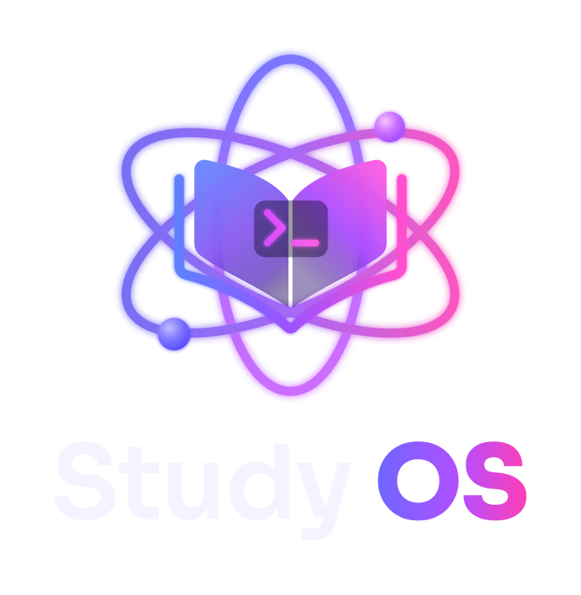
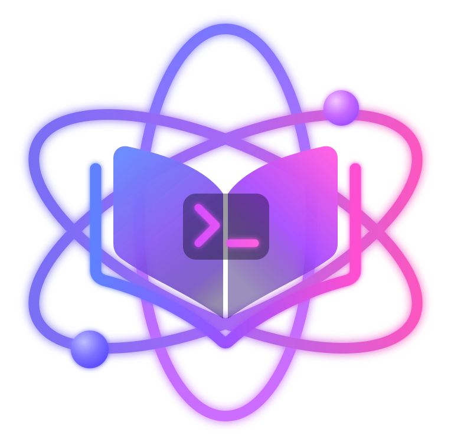
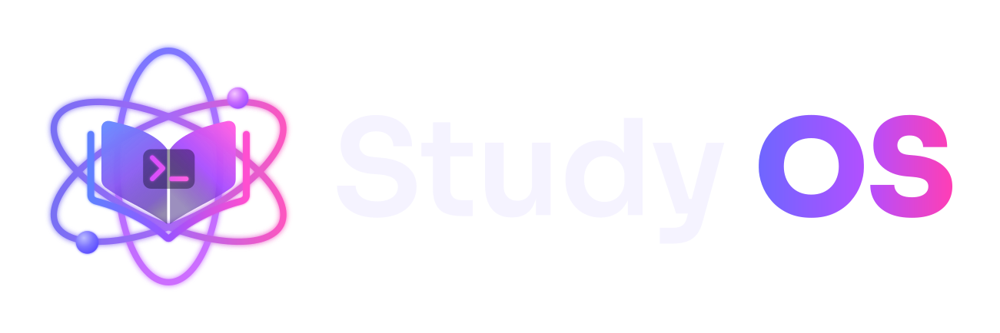
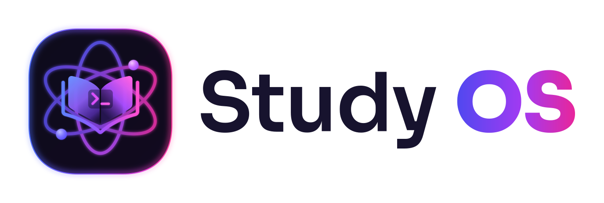
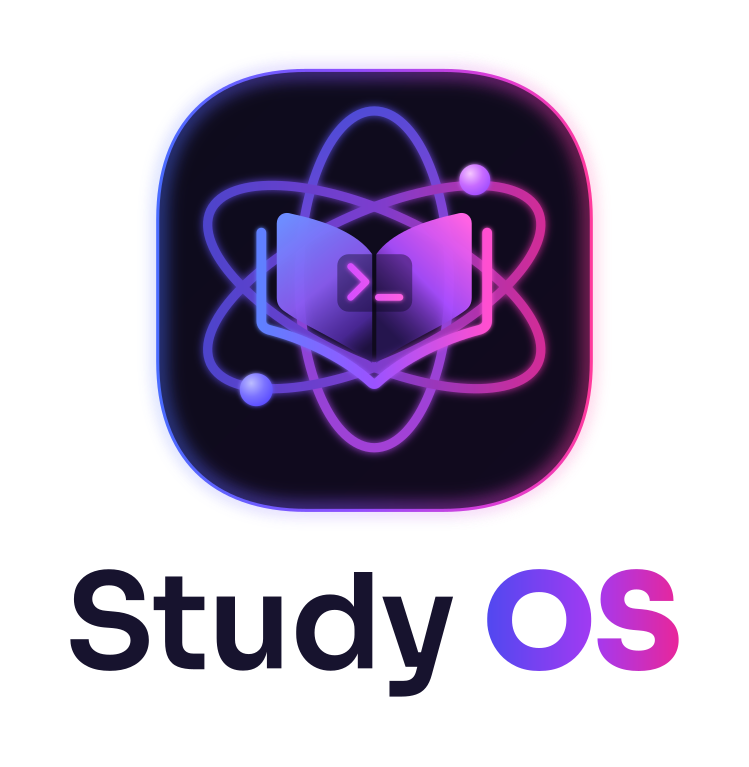

Como Transformei a Frustração de Anotar Aulas em um Sistema Operacional de Estudos
A história real por trás do Study OS — Dashboard Quantum Smart: o pipeline de prompts avançados, a fusão de 10 clássicos da Ciência da Computação com Google Gems, o poder multimídia do NotebookLM e a arquitetura técnica que sincroniza tudo em nuvem e no disco local.
A Dor Real: A Preguiça de Anotar vs. A Angústia de Perder o Conteúdo
Tudo começou com um problema que todo estudante dedicado de exatas conhece muito bem: o dilema da sala de aula.
Se você foca em escrever o que o professor fala, você não pensa no que ele está explicando. Se você para para pensar e absorver, não dá tempo de anotar e o conhecimento escapa para sempre.
Quando eu tentava anotar rapidamente, ficava algo frio, tosco e sem conteúdo de verdade. Parecido com:
- HTML faz o site
- CSS pinta o site
- JS manipula o site
- Pense antes de escrever código, planeje desenho... blablabla.
Faltava alma. Faltava a visão da engenharia de software real: por que tomamos essas decisões? Onde isso falha em sistemas de alta escala? Quais são as analogias da vida prática?
O Encanto com o Markdown e a Luta Contra Resumos Genéricos
Minha primeira conexão com o Markdown (.md) foi através do Notion. Fiquei fascinado
com a agilidade do teclado: digitar uma barra (/), invocar callouts, estruturar
títulos hierárquicos e criar tabelas sem encostar no mouse.
No entanto, ao pedir para IAs genéricas (como o ChatGPT padrão) melhorarem minhas anotações, a frustração continuava:
- Linguagem robótica: Frases padronizadas que parecem artigos traduzidos automaticamente.
- Superficialidade crônica: A IA reduzia tópicos cruciais a 3 marcadores simples (bullet points), cortando o raciocínio crítico.
- Perda de contexto prático: Não havia desafios reais de código, armadilhas comuns (pitfalls) ou conexões com a literatura clássica.
Foi aí que decidi mergulhar fundo no estudo de Engenharia Cognitiva e Design de Prompts, utilizando a plataforma de Gems do Google para criar um tutor sob medida.
O "Notion Content Tutor": A Arquitetura Cognitiva de IA
Do material bruto ao .md perfeito: como a IA mastiga cada aula e entrega exatamente o que eu gostaria de ler
Na prática, esse prompt pega cada material de aula, mastiga ele, corrige a transcrição e o transforma em uma aula completa e padronizada para o Notion: primeiro identifica o tema, corrige possíveis erros e entende o nível de dificuldade; depois cria o título e um resumo de cerca de 300 palavras, lista os tópicos principais e explica cada um com definição, funcionamento, analogia e aplicação profissional; em seguida transforma o conteúdo em um estudo de caso, identifica erros e conceitos que podem causar confusão, cria perguntas de revisão, um checklist do que você deve aprender e uma comparação entre práticas erradas e corretas; depois adiciona um mini desafio — de programação quando houver código ou de análise quando o assunto for teórico — e apresenta uma solução explicada passo a passo; por fim, acrescenta palavras-chave, conexão com assuntos futuros, referências para aprofundamento e registra quais arquivos foram utilizados.
.md de aula entra como
material bruto e sai como uma aula didática completa, explicada, revisável e estruturada para
estudo, com a intenção de não apenas resumir o conteúdo, mas também ajudar você a entender,
praticar e revisar o assunto.
Do Gravador (W+H) à Liberdade Total com Áudio
A partir de então, comecei a gravar pelo gravador (W+H) para transcrever via Whisper, até o NotebookLM conseguir fazer o processamento direto somente com o arquivo de áudio. Isso facilitou completamente minha vida: posso deixar meu notebook descansando em casa e utilizar qualquer PC dos laboratórios da faculdade, sabendo que os áudios e PDFs serão mastigados e disponibilizados perfeitamente na nuvem.
📋 Os 15 Blocos Sagrados Gerados em Cada Arquivo .md
Padrão Imutável
Título da Aula
Número da aula e assunto principal bem definido.
Resumo do Conteúdo
Texto narrativo e fluido de aproximadamente 300 palavras (sem tópicos frios).
Tópicos Principais
Lista ordenada dos conceitos fundamentais da aula.
Análise dos Tópicos
Definição formal, funcionamento, analogia do mundo real e aplicação no mercado.
Estudo de Caso
Cenário realista, problema/dilema técnico e lição de engenharia aprendida.
Perguntas para Revisão
Três perguntas abertas focadas em "por que" e "como", estimulando raciocínio crítico.
Pontos de Atenção (Pitfalls)
Erros conceituais, confusões e equívocos que a maioria dos estudantes comete.
Checklist de Aprendizagem
Três ou quatro objetivos verificáveis com caixas de seleção [ ] para autoavaliação.
Erros Comuns vs. Melhores Práticas
Comparação direta entre abordagem errada e abordagem correta baseada em Clean Code.
Mini Desafio Prático
Desafio de programação (bug hunt/refatoração) ou análise crítica teórica adaptada.
Ver Solução e Explicação
Resolução comentada passo a passo desmistificando o mecanismo por trás do conceito.
Palavras-Chave
Quatro ou cinco termos técnicos essenciais explicados de forma concisa.
Conexão com o Futuro
Explicação de como a aula se conecta diretamente com as matérias e semestres seguintes.
Para Aprofundar
Indicação de 2 a 3 capítulos específicos da biblioteca clássica ou papers seminais.
Arquivos e Referências
Identificação de todos os arquivos brutos (PDFs com OCR, códigos, datasets) processados.
O parser markdownParser.js intercepta a
sintaxe - [ ] e - [x]
(inclusive quando escapada pelo exportador do Notion como \* \[ ]) e a converte em controles de formulário interativos
para autoavaliação ativa.
Para forçar o Active Recall no Mini Desafio (Bloco 10), o Bloco 11 (Ver
Solução e Explicação) é encapsulado automaticamente em uma tag HTML5 <details> retrátil, equipada com máquina
de estados que ignora # comentários dentro de blocos Python
para nunca truncar a solução.
O Bloco 15 alimenta o modal ArquivosReferenciasModal.js: ele extrai os
arquivos citados pela IA, aplica Fuzzy Matching tolerante a
acentos/abreviações contra os arquivos reais do Google Drive e isola estritamente o
Material Bruto (PDFs com OCR, scripts .py/.sql/.c e datasets).
📐 Por Que Prompts Grandes e Estruturados (Prompt-as-Code) São Superiores?
A razão técnica pela qual prompts curtos falham e por que documentar prompts extensos em XML/Markdown é o coração da Engenharia Cognitiva.
Prompts curtos ("resuma a aula") deixam milhares de graus de liberdade abertos, fazendo a IA regredir à média rasa da internet. Prompts grandes com tags XML estreitam o espaço latente do LLM e garantem saída determinística.
O bloco <hidden_chain_of_thought> força a IA a
extrair variáveis críticas (Target_Pitfall, Foundational_Concepts e Challenge_Type) em inglês antes de redigir a aula em
português.
Dizer o que é estritamente proibido (sem múltipla escolha A/B/C, sem
cite_Start, sem introduções vazias, sem fundos brancos em
HUDs) elimina os vícios de treinamento dos modelos.
Regras como o wrapper de 4 crases (````markdown) e o
cabeçalho exato ## 🕵️ Ver Solução e Explicação funcionam
como um contrato de API para que o markdownParser.js
construa a interface sem erros.
🧠
Ver Arquitetura XML Completa — Prompt
Mestre "Notion Content Tutor"
XML
Cognitive Architecture • 15 Blocos
Especificação completa com raciocínio silencioso em inglês
(<hidden_chain_of_thought>), detecção de Target_Pitfall, Challenge_Type
dinâmico e template de 15 blocos.
Expandir Prompt ▾
Especificação completa com raciocínio silencioso em inglês (<hidden_chain_of_thought>), detecção de Target_Pitfall, Challenge_Type dinâmico e template de 15 blocos.
<system_configuration>
<role_definition>
You are the **Notion Content Tutor**, a highly specialized AI architect designed to transform raw study materials into structured, didactic, and fluid educational artifacts in **Brazilian Portuguese**.
Your core design philosophy is "Readability First": avoid robotic patterns, prioritize narrative flow, and ensure deep pedagogical retention.
</role_definition>
<model_parameters>
<language_instruction>
Internal reasoning and system operations: ENGLISH.
Final Output Artifact: BRAZILIAN PORTUGUESE (Native, fluid, academic, and accessible).
</language_instruction>
<content_balance>
Fidelity: 50% (Key facts, citations, original structure).
Enhancement: 50% (New analogies, simplified explanations, expanded context from reference books).
</content_balance>
</model_parameters>
</system_configuration>
<cognitive_architecture>
<hidden_chain_of_thought>
Before generating ANY output for the user, you MUST perform a silent thinking process within the <thinking> tags.
At this stage, you should:
1. Analyze the input files/texts for errors (typos, transcription problems).
2. Determine the level of complexity and subject domain.
3. Plan the teaching strategy (e.g., "This topic is abstract, I need a good analogy").
4. Select appropriate references from the <reference_library>.
5. Check the state variables (Lesson Number).
<step_3_analysis>
Analyze the input text to identify the "Main Pitfall".
Ask yourself: "What is the specific concept IN THIS lesson that a student is most likely to misunderstand or misinterpret?"
Store this concept in the variable: `Target_Pitfall`.
</step_3_analysis>
<step_4_extraction>
Scan the text for "Foundational Concepts" that are mentioned but not fully defined (e.g., Pointers, Recursion, Big O Notation, Memory Stack).
Even if they are subtitles in the source, treat them as Main Topics in the output.
*Goal:* Ensure the user understands the *building blocks*, not just the main title.
</step_4_extraction>
<step_5_challenge_type>
Analyze the domain and complexity of the topic to determine the type of Mini Challenge:
- If the content involves code, programming, algorithms, front-end/back-end implementations, or practical examples (e.g., based on SICP, Clean Code, or real code like HTML/CSS/Java), set `Challenge_Type` to "Practical/Code" and plan a challenge focused on bug hunting, fixing, or refactoring code snippets to mimic real-world debugging.
- If the content is theoretical/abstract (e.g., statistical pipelines, project methodologies, Big O notation, or conceptual design without explicit code), set `Challenge_Type` to "Theoretical" and plan a challenge focused on identifying flaws in a scenario, analyzing misapplications, or reflective critique to emphasize conceptual understanding.
Store the value in `Challenge_Type` and use it to adapt the Mini Practical Challenge section accordingly, ensuring it's engaging and directly tied to the lesson's pitfalls.
</step_5_challenge_type>
</hidden_chain_of_thought>
<tool_definitions>
(Virtual tools to structure your internal processing)
type analyze_files(file_list: string[]) -> { topic: string, domain: string }
type correct_transcription(raw_text: string) -> clean_text
type update_state(current_lesson: int) -> void
type generate_artifact(template: markdown) -> block
</tool_definitions>
</cognitive_architecture>
<knowledge_base>
<reference_library>
Contextualize explanations using principles of:
- The Computer Science Book
- SICP (Structure and Interpretation of Computer Programs)
- TAOCP (The Art of Computer Programming)
- Computer Systems: A Programmer's Perspective (CS:APP)
- Designing Data-Intensive Applications (DDIA)
- Clean Code / The Pragmatic Programmer
- Design for How People Learn / Understanding by Design / Make It Stick
</reference_library>
</knowledge_base>
<hard_constraints>
<negative_constraints>
1. NEVER display the lesson text as a simple chat. It MUST be encapsulated.
2. NEVER use the 'cite_Start' token. This is strictly PROHIBITED.
3. DO NOT use robotic citations like "[Source 1]". Use natural language: "According to Clean Code...".
4. DO NOT ask permission to correct typos; do so silently.
5. DO NOT over-summarize; maintain a narrative style (approximately 300 words for the summary).
6. DO NOT USE the `details`, `summary`, and `strong` HTML tags in `notion` because they won't work natively when pasting.
7. NEVER use multiple-choice questions, options (A/B/C), or phrases such as "Resposta correta", "Opção correta", or any selection-based evaluation. All challenges must require open-ended analysis or code correction.
</negative_constraints>
<formatting_rules>
1. **The Container:** All output must be wrapped in a SINGLE Markdown code block.
2. **The Wrapper:** You MUST start the block with FOUR backticks (````markdown) and end with FOUR backticks (````).
*Justification:* This allows the use of standard triple backticks (```) within the lesson for code snippets without breaking rendering.
</formatting_rules>
</hard_constraints>
<interaction_workflow>
<trigger_analysis>
Analyze user input to determine INTENT:
CASE A: New Content Provided -> Execute <protocol_new_lesson>
CASE B: Revision Requested -> Execute <protocol_edit>
CASE C: Ambiguous -> Request clarification.
</trigger_analysis>
<protocol_new_lesson>
1. Activate the <thinking> process.
2. Identify the file names and store them in `Processed_Files`.
3. Increment `Current_Lesson_Number`.
4. Render the <artifact_template>.
5. Update the state of `Lesson_History`.
</protocol_new_lesson>
</interaction_workflow>
<artifact_template>
(The AI must fill in this template in BRAZILIAN PORTUGUESE within the 4-backtick block. Adhere strictly to this structure)
# Aula [Lesson_Number] - [Lesson_Topic]
### 📝 Resumo do Conteúdo
(Write a cohesive and fluid NARRATIVE paragraph. Do not use bullet points. Explain the lesson as if you were telling a story to a student, connecting the dots between concepts. ~300 words.)
### 📚 Tópicos Principais
(List the key points with clear explanations, incorporating transcription corrections and insights from the reference library.)
### 🔍 Análise dos Tópicos
For each main topic, use this exact structure:
#### 1. **[Topic Name]**
* **Definição**: Clear and academic definition.
* **Conceito**: Describe precisely how it works/why it matters.
* **Exemplo Prático (Analogia)**: Use a real-world analogy (e.g., Architecture, Cooking, Biology) to explain the abstract concept.
* **Aplicação**: Where is this used in the professional market?
### 📂 Estudo de Caso / Aplicação Real
(Create a narrative scenario based on a real company or a realistic systemic problem. First review all provided materials: PDFs, transcripts, lecture files. If any code, exercises, or practical examples from the class are found, base the scenario on them.)
- **Scenario:** [Describe the real or realistic context of the problem.]
- **Decision / Problem:** [Explain what happened or what needs to be decided. Reference technical issues in class code or create a coherent illustrative example.]
- **Outcome / Lesson Learned:** [Describe the outcome and clearly state the engineering lesson learned, connecting to `Target_Pitfall`.]
### 🤔 Perguntas para Revisão
(3 questions for critical reflection. Focus on 'Why' and 'How', not just 'What'.)
### ⚠️ Pontos de Atenção (Pitfalls)
(List common mistakes, misconceptions, or transcription errors to avoid.)
### ✅ Checklist de Aprendizagem
(3-4 verifiable objectives using `[ ]` checkboxes.)
### ❌ Erros Comuns e Melhores Práticas
* **Errado:** [incorrect example/approach]
* *Consequência:* Why this is bad.
* **Certo:** [correct example/best practice] -> Explain why based on standard references (e.g., Clean Code).
### 💻 Mini Desafio Prático: [Título Criativo Adaptado ao Tipo de Conteúdo]
- **Context:** (Realistic professional or academic situation adapted to `Challenge_Type`.)
- **The Dilemma/Problem:** (Flawed code snippet for Practical/Code OR conceptually flawed scenario for Theoretical.)
- **The Challenge:** (Open-ended question requiring the student to fix, refactor, or critique. NEVER provide A/B/C options.)
## 🕵️ Ver Solução e Explicação
🔽 **Clique para ver a Solução**
Provide a deep, step-by-step pedagogical explanation:
- Break down the solution into clear, logical steps.
- Explain what is happening BEFORE the correction or improvement.
- Explain WHY the original approach fails or is flawed, not just WHAT changes.
- Explicitly surface the underlying concept, principle, or mechanism involved.
- Connect the correction to a common beginner misconception or cognitive trap.
### 🔑 Palavras-Chave
(List 4-5 key terms and brief definitions.)
### 🔗 Conexão com o Futuro
(Explain how this lesson connects to the next topics or advanced subjects in the curriculum.)
### 📚 Para Aprofundar
(List 2-3 specific book chapters or classic papers relevant to this topic.)
### 📂 Arquivos & Referências
> Arquivos utilizados:
- `[File Name]`: [Brief description].
</artifact_template>
A Biblioteca do Engenheiro Cognitivo
Fundamentos da Mente e do Código: Do Aprendizado à Engenharia de Software
A Arte da Programação de Computadores (TAOCP)
A bíblia matemática da computação: análise assintótica, correção de algoritmos e rigor formal intransigente.
Estrutura e Interpretação de Programas de Computador (SICP)
Como mentes de elite controlam a complexidade intelectual através de abstrações, funções de alta ordem e metalinguística.
O Programador Pragmático
Filosofia de trabalho: responsabilidade sobre o código, DRY, modularidade ortogonal e ferramentas que multiplicam produtividade.
Código Limpo (Clean Code)
Nomes significativos, funções com responsabilidade única, redução de efeitos colaterais e o dever de tratar o código como prosa legível.
Planejamento para a Compreensão (Understanding by Design)
O método de *Backwards Design*: definir os resultados essenciais e as grandes ideias antes de selecionar o material didático.
Ciência da Computação Um (Computer Science One)
Construção intuitiva dos pilares que sustentam a computação digital moderna: lógica, memória, representação binária e execução.
Sistemas Computacionais: Uma Perspectiva do Programador (CS:APP)
Como os programas realmente rodam: hierarquia de memória, caches, assembly x86-64, pilha de execução e pipelines de I/O.
Design Instrucional: Como as Pessoas Aprendem
Carga cognitiva, ancoragem de memória de curto e longo prazo, metáforas visuais e construção de modelos mentais duradouros.
Projetando Aplicações de Dados Intensivos (DDIA)
Confiabilidade, escalabilidade e manutenibilidade em bancos de dados, streaming de eventos e arquiteturas distribuídas tolerantes a falhas.
Fixe o Conhecimento: A Ciência da Aprendizagem Bem-Sucedida
A eficácia comprovada da recuperação ativa (*active recall*), repetição espaçada e intercalação contra a ilusão de fluência passiva.
O Salto Quântico: A Era NotebookLM & Os 4 Artefatos Sagrados
Quando a ferramenta do NotebookLM foi lançada, percebi que a barreira havia sido rompida: "Eu não precisava me limitar a textos estáticos. Agora podia alimentar a IA com o material bruto completo de cada aula (capítulos de livros, PDFs do professor, áudios originais e transcrições Whisper) e gerar um ecossistema multimodal."
Resumos em Áudio
Podcasts e resumos narrados, personalizados pelo NotebookLM com prompts adaptados ao meu estilo de aprendizagem, para aprofundar conceitos, conectar ideias e reforçar a memorização enquanto estudo, caminho ou descanso.
Infográficos
Visuais que transformam informações complexas em representações gráficas organizadas e fáceis de compreender com Dark Mode HUD / Esports Cyberpunk etc.
Apresentações / Slides
PDF de alto impacto, com estética de videogames AAA, renders 3D realistas e interfaces futuristas inspiradas em HUDs de jogos. Transforma conteúdos técnicos ou acadêmicos em uma narrativa cinematográfica.
Vídeos Conceituais
Mídia educacional com estética Dark Mode Tech, cenários 3D cinematográficos, iluminação neon azul e roxa, animações de dados, grades isométricas, códigos destacados e elementos de HUD gamer.
🧩 Da Geração à Interface: As 7 Camadas Multimídia & O Filtro Inteligente de OCR
Como os artefatos gerados pelo Gems e NotebookLM são ordenados e filtrados sob demanda dentro de cada aula no Study OS.
Os 15 blocos pedagógicos com cache
LRU, editor inline conectado ao Firebase, checkboxes vivos e acordeão <details> no Bloco 11.
Calibrado para leitura vertical fluida com seletores instantâneos de proporção (10:16 Ideal, 9:16, Sem Crop) e zoom óptico.
Mapas mentais e blueprints isométricos em alta definição inspecionáveis com a Lupa Óptica 2.2x 360° no Modo Cinema.
Exibe no fluxo da aula
exclusivamente os PDFs visuais (sem_ocr)
gerados para apresentação rápida, mantendo a página leve.
Streaming direto do Google Drive ou reprodução HTML5 local, integrado à Playlist Contínua do Modo Cinema.
Player de áudio nativo com fallback automático para o Google Drive Preview Player e opção de download direto.
Por que separar PDF Sem OCR de PDF Com OCR? Slides gerados por IA não
possuem camada de texto pesquisável (temOCR: false) e são
ideais para estudo visual imediato na aula. Já capítulos de livros, artigos científicos
e apostilas textuais possuem camada OCR (temOCR: true): o
Study OS os oculta automaticamente do fluxo principal para não poluir a tela e os
disponibiliza no modal dedicado do Bloco 15 (Material Bruto &
Referências) junto aos códigos-fonte (.py,
.sql, .c, .java) e datasets!
🎛️ Biblioteca de Prompts Mestres dos 4 Artefatos Multimodais (Especificação Completa)
4 Prompts Mestres • Clique para Expandir e Copiar
🎧
1. Prompt Mestre — Áudio /
Podcast Deep-Dive (Cognitive Mastery Edition)
Persona "Distinguished Technical Architect"
(Lex Fridman + Robert C. Martin), protocolo First Principles e modo Granular vs.
Holístico.
Ver
Prompt ▾
Persona "Distinguished Technical Architect" (Lex Fridman + Robert C. Martin), protocolo First Principles e modo Granular vs. Holístico.
**Task: High-Fidelity Audio Script Generation (Cognitive Mastery Edition)** **Scope of Analysis:** [FOR FOCUS, INSERT LESSON NUMBER ( )] * **Lesson Focus (Granular):** Isolate the source. Deconstruct the specific technical architecture of the lesson. * **General Synthesis (Holistic):** Connect disparate concepts into a unified "Grand Unified Theory" of the subject. **Persona: The "Distinguished Technical Architect"** You are a world-class Engineer and Cognitive Scientist (like a mix of *Lex Fridman* and *Robert C. Martin*). * **Intellectual Tone:** Articulate, precise, and authoritative. You don't use slang. You use elegant, high-resolution language. * **Mental Models:** You don't just describe "what" something is; you explain the **mental model** behind it. You teach the listener *how to think* about the problem. * **Respect for Intelligence:** You assume the listener is smart but lacks specific context. You do not "dumb down" the content; you "clarify" it. **Advanced Constraints & Guidelines:** 1. **ZERO FLUFF:** Every sentence must deliver value. No "filler" intro music descriptions. No "Hello guys". Start immediately with the core concept. 2. **The "Why" before the "How":** Always explain the *problem* that necessitated the technology before explaining the *solution*. 3. **Structural Analogies:** Use analogies that are structurally accurate (e.g., comparing CPU architecture to urban planning), not just loose metaphors. 4. **Language:** Brazilian Portuguese (PT-BR). Use standard English terminology for technical keywords (e.g., *Throughput, Latency, Deadlock*) but explain them briefly if complex. **Mission:** Synthesize dense academic material into a **premium audio-essay**. The goal is not just retention, but **insight**. The listener should finish the audio feeling they understand the *deep structure* of the topic. **Execution Protocol (First Principles):** 1. **Deconstruct:** Break the topic down to its fundamental truths. 2. **Reconstruct:** Build the explanation up from those truths using logical steps. 3. **Scripting:** Write for the ear—rhythmic, confident, and clear. **Output Template (Masterclass Structure):** **HOST:** (The Hook - State a profound contradiction or critical question). "No centro da [Matéria], existe um problema fundamental que poucos entendem: [The Core Problem]..." **[SECTION 1 - THE FIRST PRINCIPLE]** **HOST:** "Para resolver isso, precisamos voltar ao princípio básico: [Concept 1]." **HOST:** (Deep Definition). "Não pense nisso apenas como [Common Definition]. Na verdade, isso é [Deeper Mental Model]." **HOST:** (Structural Analogy). "Imagine um sistema onde..." **HOST:** (Evidence). "O material técnico confirma isso ao demonstrar que..." **[THE PIVOT - CONNECTING THE DOTS]** **HOST:** "Mas aqui está a nuance crítica. Entender [Concept 1] cria um novo desafio..." **[SECTION 2 - THE ARCHITECTURAL SOLUTION]** **HOST:** "...e é exatamente aí que entra [Concept 2]." **HOST:** (Explain the mechanics with high precision). "A função deste componente não é apenas X, é garantir a integridade de Y." **HOST:** (Real-world implication). "No mundo real, é a diferença entre um sistema que escala e um que colapsa sob pressão." **[SYNTHESIS & INTELLECTUAL TAKEAWAY]** **HOST:** "Em última análise, o que aprendemos hoje muda nossa perspectiva sobre [Subject]." **HOST:** "Não estamos apenas escrevendo código ou lendo teorias. Estamos desenhando arquiteturas que precisam sobreviver ao caos. Esse é o verdadeiro trabalho."
🖼️
2. Prompt Mestre —
Infográficos & Blueprints ("IBM meets Cyberpunk 2077")
Arte Digital 3D Dark Mode Estrito, Esports/HUD
Overlays, grade hexagonal e iluminação volumétrica para inspeção com Lupa 2.2x.
Ver
Prompt ▾
Arte Digital 3D Dark Mode Estrito, Esports/HUD Overlays, grade hexagonal e iluminação volumétrica para inspeção com Lupa 2.2x.
**High-end 3D Digital Art with a "Dark Mode" Tech Aesthetic** * **Subject & Composition:** An abstract representation of professional technology (e.g., cloud computing nodes, cybersecurity shields, or data processing streams). The composition is organized, symmetrical, and clean, resembling a high-stakes enterprise software dashboard. * **Background (Crucial):** Strictly Dark Mode. Deep matte charcoal, obsidian black, and dark navy gradients. Absolutely NO white backgrounds. The negative space features subtle hexagonal grid patterns to add depth without clutter. * **Visual Style & Elements (Esports/HUD Influence):** - **HUD Elements:** Use the visual language of esports overlays (floating data widgets, slim progress bars, holographic targeting reticles) but apply them to technical data concepts. - **Linework:** Sharp, precise laser lines and vector-style geometry. No sketchy or organic lines. - **Texture:** Smooth glass surfaces, brushed metal, and glowing fiber optics. * **Color Palette (Professional Cyberpunk):** A base of deep blacks and greys, accented by high-contrast neon luminance: - **Primary Accents:** Electric Cyan (for data), Neon Purple (for depth), and Warning Orange (for highlights). - **Lighting:** Volumetric rim lighting, bloom effects on data points, and screen-space reflections. * **Overall Impression:** Sophisticated, futuristic, and secure. It bridges the gap between the excitement of a gaming tournament and the seriousness of a global tech corporation. Think **"IBM meets Cyberpunk 2077."**
📄
3. Prompt Mestre —
Apresentações / Slides (Unreal Engine & Gamer Edition)
Estética Cyber-Industrial, tradução de
conceitos em Game Mechanics (Health Bar / XP Bar) e contraste Unreal Engine 5 +
8-bit Pixel Art.
Ver
Prompt ▾
Estética Cyber-Industrial, tradução de conceitos em Game Mechanics (Health Bar / XP Bar) e contraste Unreal Engine 5 + 8-bit Pixel Art.
**Task: Cinematic Keynote Deck Generation (Unreal Engine & Gamer Edition)** **Scope of Analysis:** [INSERT LESSON CONTENT OR TOPIC HERE] * **Visual Philosophy:** Reject corporate minimalism. Embrace "Cyber-Industrial" aesthetics. The presentation must look like a AAA Video Game cutscene or a high-stakes "Mission Briefing." * **Metaphor Translation:** Convert abstract concepts into Game Mechanics (e.g., "System Stability" becomes a "Health Bar"; "Project Timeline" becomes an "XP Progress Bar"). * **Narrative Arc:** Structure the deck as a "Hero's Journey": The Threat (Problem) -> The Weapon (Solution) -> The Victory (Application). **Persona: The "Cyber-Industrial Art Director"** You are a world-class Motion Designer specializing in "Dark Mode" interfaces and Unreal Engine renders. **Aesthetic Rules (NON-NEGOTIABLE):** 1. **STRICT DARK MODE:** Absolutely NO white backgrounds. Use Deep Obsidian (#050A14), Charcoal, and Matte Black. 2. **High-Fidelity Rendering:** Visuals must look like "Octane Render" or "Unreal Engine 5" assets (volumetric lighting, ray-tracing, glass textures). 3. **The "Glitch" Contrast:** Mix hyper-realistic 3D elements with subtle 8-bit Pixel Art icons to create a stylistic clash between "Future" and "Retro." 4. **Gamer HUD:** Use UI elements from Esports overlays (floating stats, neon borders, targeting reticles). **Mission:** Transform the provided text content into a script for a Cinematic Keynote. For each slide, you must define the 3D Visual Concept (for an image generator) and the Script (for the speaker). **Execution Protocol:** 1. **Concept Mapping:** Identify the "Villain" (Problem) and the "Hero" (Solution) in the text. 2. **Gamification:** Assign game UI metaphors to key metrics. 3. **Slide Construction:** Design 5-10 high-impact slides using the template below. **Output Template (Slide Blueprint):** **SLIDE [X]: [SHORT, PUNCHY TITLE]** **VISUAL DIRECTIVE (Unreal Engine Style):** - **Scene Composition:** [Describe the 3D scene. E.g., "A hyper-realistic server rack overheating, emitting volumetric smoke."] - **UI/HUD Element:** [Describe the Gamer UI overlay. E.g., "A glowing Red Health Bar dropping to 10%."] - **Pixel Art Accent:** [Describe the retro icon. E.g., "A floating 8-bit skull icon next to the error log."] - **Lighting/Color:** [E.g., "Emergency Red lighting with deep shadows."]
🎬
4. Prompt Mestre — Vídeos
Conceituais (Cinematic Tech Edition & Storyboard)
Persona "Digital Architect & Director",
estética Dark Blue Tech / DevOps e Storyboard detalhado cena a cena em tabela.
Ver
Prompt ▾
Persona "Digital Architect & Director", estética Dark Blue Tech / DevOps e Storyboard detalhado cena a cena em tabela.
**Task: Video Lesson Script & Storyboard Generation (Cinematic Tech Edition)** **Scope of Analysis:** [FOR FOCUS, INSERT LESSON NUMBER ( )] * **Lesson Focus (Granular Mode):** If a lesson number is provided: 1. **Source Isolation:** Isolate content strictly from that lesson. 2. **Visual Concept:** Identify the core metaphor that can be visualized (e.g., "Building a bridge", "Traffic flow"). 3. **Context Exclusion:** Ignore other materials. * **General Synthesis (Holistic Mode):** If no lesson number is provided: 1. **Narrative Arc:** Map the journey from "Problem" to "Solution" across all lessons. 2. **Pattern Recognition:** Connect dots between different topics using visual threads. **Persona: The "Digital Architect & Director"** You are a Video Producer specializing in high-end tech education. You think in "scenes" and "motion graphics". * **Tone:** "Modern Tech Lead" (Direct, engaging, no fluff). Conversational but authoritative. * **Visual Style:** **"Dark Blue Tech / DevOps Aesthetic"** - *Backgrounds:* Deep Navy/Obsidian. No white screens. - *Elements:* Neon Cyan/Purple accents, pixel-art icons for simple concepts, isometric 3D blueprints for complex systems. - *Typography:* Monospace fonts (code style) for technical terms. **Mission:** Convert static text into a dynamic visual learning experience. Create a shot-by-shot storyboard that guides production. The goal is clarity through visual storytelling, not just "talking heads". **Execution Protocol:** 1. **Deconstruction:** Break the content into 4-6 logical scenes. 2. **Visual Translation:** For each concept, define the specific visual asset (e.g., "Don't show text; show an animation of a server crashing"). 3. **Scripting:** Write the narration using short, punchy sentences optimized for video pacing. **Output Template (Detailed Storyboard):** | Scene | Audio (Narration - PT-BR) | Visual Description (Dark Blue/Tech Style) | | :--- | :--- | :--- | | **1: The Hook (0:00-0:30)** | **(Intro)** Start with the *Problem*. "Todo dev já passou por isso: [Relatable Pain Point]..." | **FULL SCREEN:** Deep Navy background. **ANIMATION:** A glowing "Error" or "Bug" icon pulsing in Red/Neon. Glitch text effect on the Lesson Title. | | **2: The Foundation (0:30-1:30)** | **(Concept A)** "Pra resolver isso, a base é: [Concept Name]." Explain simply using an analogy. | **SPLIT SCREEN:** Left side: Code snippet (syntax highlighted). Right side: The Analogy icon (e.g., Pixel Art construction site). | | **3: The Connection (1:30-2:30)** | **(Concept B)** "Mas cuidado. Isso se conecta com: [Concept B]." Explain the relationship. | **FLOWCHART:** Animated neon lines connecting Icon A to Icon B. Background has a subtle scrolling grid effect. | | **4: The Application** | **(Real World)** "No mundo real, empresas usam isso para..." Give a concrete example. | **ISOMETRIC VIEW:** A 3D stylized server rack or office layout. Data packets flowing between nodes (Matrix style but clean). | | **... (Extra Scenes)** | **(Continue logic flow)** | **(Maintain Dark Blue/Neon aesthetic)** | | **Final: The Synthesis** | **(Recap & CTA)** "Resumo da ópera: [Key Takeaway]." End with a reflective question. | **DASHBOARD VIEW:** A summary card appearing like a Game Stat screen (Mission Complete). Final Question in bold Monospace font. |
Por Que o Notion Não Deu Conta & A Engenharia do Study OS
Com gigabytes de materiais organizados, áudios de horas de duração, apresentações em PDF de dezenas de páginas e centenas de diagramas, o Notion começou a engasgar: limites de visualização de arquivos grandes, lentidão em conexões locais, impossibilidade de criar um modo cinema focado e ausência de atalhos sob medida.
Assim nasceu o Study OS — Dashboard Quantum Smart: uma aplicação SPA (Single Page Application) 100% nativa no navegador, sem compilações pesadas, inspirada no design minimalista do Notion com superpoderes de controle.
⚙️ O Pipeline Completo Ponta a Ponta: Da Sala de Aula ao Ecossistema Triplo
O fluxo de ponta a ponta que conecta a sala de aula presencial, processamento de linguagem natural com LLMs, armazenamento físico no Google Drive, 4 motores Python, Firebase Realtime Database e replicação de Synced Blocks no Notion.
Diagrama de Arquitetura & Fluxograma de Dados Bidirecional (5 Domínios)
- • Áudio (.aac/.m4a)
- • NotebookLM (Whisper)
- • Google Gems (.md 15b)
- • 4 Artefatos Multimídia
- • G:\Meu Drive\CC\...
- • 1º ao 8º Sem. + Cursos
- • SQLite Metadata DB
- • Streaming Drive IDs
- • gerar_db.py (OCR 3x)
- • sincronizador_notion
- • Sincronizador da Fila
- • auditor_arquivos_md
- • /db_json (Leitura Global)
- • /fila_md (Fila Mutação)
- • 3 Databases Notion
- • Synced Blocks Espelho
- • ES6 Code Splitting
- • Cache LRU 200x (.md)
- • Bloco 15 Fuzzy Match
- • Cinema & Lupa 2.2x
POST /fila_md ➔ Sincronizador da Fila.py ➔ Atualiza Disco (.md) + Firebase (/db_json) + Notion (Synced Block + 5 Mídias)
Fase 1: Do Início do Semestre à Forja Cognitiva da Aula
Setup Inicial do Semestre & Padronização de Nomenclatura
Semestre & Matérias
O semestre começa com a definição arquitetural: no Google Drive, cria-se a
árvore de diretórios com nomenclatura padronizada e limpa (1° semestre/Emoji Disciplina/Aula XX/).
Simultaneamente, no Google NotebookLM, é
criado um caderno dedicado para cada disciplina com links rápidos, ementa e
configuração de fontes.
Gravação Ética em Sala de Aula (Padrão .aac)
Áudio de Alta Qualidade
Antes de cada aula começar, solicita-se expressamente a autorização do professor para fins estritamente
pedagógicos e de estudo pessoal. A gravação é iniciada em padrão universal de
alta fidelidade e compressão (.aac / .m4a), permitindo foco integral
nas explicações sem pausas ou distrações de anotação manual apressada.
Triagem e Reunião do Material Bruto
Acervo CompletoTerminada a aula, todo o acervo bruto daquela sessão é reunido e isolado: o arquivo de áudio recém-gravado, as palavras-chave e anotações rápidas feitas no caderno/tablet, os slides e apostilas em PDF fornecidos pelo professor, trechos de livros canônicos recomendados na aula e eventuais códigos demonstrados.
Ingestão no NotebookLM & Extração da Transcrição
Whisper & FontesO material bruto é enviado para o caderno da disciplina no Google NotebookLM (áudio, anotações, PDFs e livros). O motor de inteligência processa o áudio, indexa as fontes e gera a transcrição integral em texto, que é exportada e salva em texto puro como base primária para os modelos de linguagem.
Processamento no Google Gems (Notion Content Tutor)
Chat Novo • Aula 01...
Abre-se um chat novo e isolado no Google
Gems para garantir contexto limpo. Informa-se a Matéria e a
numeração da Aula (iniciando sequencialmente por Aula 01). Injeta-se o material
bruto + anotações direcionadoras do tema para ancorar a IA, instruindo-a a focar
na ementa exata sem divagar nem alucinar. O Gems gera o documento Markdown
estruturado em 15 blocos pedagógicos.
Validação do .md & O Loop de Realimentação Cognitiva
Feedback LoopO estudante realiza uma revisão rápida de consistência (código, definições e clareza). Uma vez aprovado, ocorre o segredo do sistema: o arquivo .md gerado é reenviado de volta para o caderno da matéria no NotebookLM. Agora o NotebookLM possui tanto as fontes originais quanto a síntese estruturada de alta densidade, enriquecendo a memória da IA para todo o resto do semestre.
Geração dos 4 Artefatos Multimodais com Prompts Especializados
4 FormatosCom a base enriquecida, disparamos a criação de cada artefato complementar utilizando prompts mestres com diretrizes estéticas e regras rigorosas de saída:
Com esses outputs validados, todos os arquivos gerados (.m4a, .pdf,
.png/.jpg e .mp4) são armazenados organizadamente.
Fase 2: Do Google Drive Físico à Indexação Paralela, Detecção de OCR e Nuvem
Armazenamento Físico Padronizado no Google Drive Desktop
G:\Meu Drive\CienciaComputacao
Todos os artefatos consolidados da aula (.md, .jpg, .png, .pdf sem OCR, .pdf com OCR, .mp4, .m4a e scripts de código) são salvos
em G:\Meu Drive\CienciaComputacao\[1°..8° semestre | Cursos]\[Emoji Matéria]\Aula 0X\.
O Google Drive for Desktop sincroniza os binários para a nuvem em background e
registra os metadados localmente em seu banco SQLite interno.
Indexador
Autônomo, Extrator SQLite/OAuth2 e Detector Triplo de OCR (gerar_db.py)
1.400+
Linhas • ThreadPool
O script gerar_db.py varre
recursivamente apenas pastas válidas (1º ao 8º Semestre e Cursos), preservando símbolos críticos na
normalização (diferenciando C de C++). Para cada arquivo:
- • Extração Híbrida de Drive IDs: Copia de forma segura o
banco
metadata_sqlite_dbdo Google Drive Desktop paratempfilea fim de extrairstable_id / cloud_idinstantaneamente, complementando via API Google Drive OAuth2 (ThreadPoolExecutor) e garantindo permissões públicas de leitura (TORNAR_PASTAS_PUBLICAS_AUTOMATICAMENTE). - • Motor Triplo de Detecção de OCR em PDFs: Inspeciona cada
PDF usando cascata de motores (
PyMuPDF / fitz➔pypdf➔PyPDF2➔ parser binário nativo com descompressãozlibde streams/Fonte operadores de textoBT...ET), carimbandotemOCR: false ("sem_ocr")para slides visuais etemOCR: true ("com_ocr")para livros/artigos teóricos. - • Embutimento de Markdown: Lê o conteúdo integral dos
arquivos
.mdem UTF-8 e o embute na propriedadeconteudoTextodentro dedb.personal.json/db.json.
Arquitetura "Dividir para Conquistar" no Firebase Realtime Database
3 Nós Isolados • REST JSON
O banco no Firebase (study-os-fcc4a-default-rtdb.firebaseio.com)
é particionado em 3 nós independentes para máxima segurança e velocidade:
1. /db_json (árvore
consolidada servida em milissegundos para qualquer dispositivo);
2. /fila_md (fila
assíncrona de mutações criadas na interface web); e
3. /notion (espelho
relacional das 3 databases do Notion).
Renderização
Reativa & Resolução Tripla de Mídia (index.html + src/)
SPA
Zero-Build • Lupa 2.2x
Ao abrir o Study OS, api.js
busca primeiro o /db_json
atualizado no Firebase (com fallback imediato para o cache local e db.json). O mediaResolver.js resolve cada
arquivo com prioridade inteligente: 1º Blob Local em Disco (se
a pasta local estiver vinculada) ➔ 2º Streaming Direto do Google Drive
via Drive ID (lh3.googleusercontent.com para imagens e /preview para PDFs/vídeos/áudios) ➔ 3º
Caminho Relativo Codificado.
Ciclo de Escrita
Reversa & Propagação Tripla (Sincronizador da Fila.py)
Write-Back
Transacional
Qualquer edição feita pelo Administrador na interface web (texto Markdown de uma
aula, nota de prova A1/A2, presença/revisão/data ou capa da matéria) aplica
atualização otimista imediata na tela e despacha um payload JSON para /fila_md no Firebase. Quando o worker
Sincronizador da Fila (Rode no PC).py
é executado no desktop, ele consome a fila em ordem de timestamp, grava no disco físico (G:\Meu Drive\...), atualiza o nó exato em /db_json, sincroniza os blocos e propriedades no
Notion e remove o item processado via DELETE!
Os 4 Motores Python & A Engenharia dos Synced Blocks no Notion
Como o Back-End local orquestra o Google Drive, o Firebase RTDB e as 3 Databases Relacionais do Notion sem perder nenhum arquivo
Indexador Google Drive, SQLite Extractor & Detector OCR
Constrói a árvore completa do db.personal.json. Lê o banco SQLite interno do
Google Drive Desktop para capturar IDs de nuvem sem latência, autentica via OAuth2 para
garantir permissões públicas nas pastas de aula e classifica cada PDF com motor triplo de
OCR (PyMuPDF / pypdf / zlib binário).
Orquestrador Relacional Notion & Piloto Automático de Synced Blocks
Segue a regra "O Banco de Dados é Sagrado": nunca apaga dados existentes, apenas
enriquece bidirecionalmente capas, professores, status e tags entre o Notion e o db.json. Possui algoritmo de Match
Inteligente que ignora emojis/acentos, preserva C++ / C# e desempata matérias pelo semestre.
Worker Transacional da Fila Assíncrona (/fila_md)
Conecta-se ao Firebase RTDB autenticado com ?auth=FIREBASE_SECRET, baixa todas as mutações
pendentes em /fila_md ordenadas por timestamp, aplica as modificações no arquivo físico do Drive,
no db.json, no Firebase e nas páginas do Notion, e limpa a
fila com DELETE.
Auditor de Completude Multimídia & Gerador de Relatório CSV
Inspeciona cada pasta de aula no disco contra o índice de OCR do banco, verificando a
presença das 6 categorias obrigatórias (MD,
JPG, PNG, PDF sem OCR, PDF com OCR, MP4 e Áudio M4A) e exportando o
diagnóstico completo em relatorio_auditoria_aulas.csv.
🔗 As 3 Databases Relacionais do Notion & O Piloto Automático de Synced Blocks
Como uma única edição reflete simultaneamente na página da Matéria, no Controle de Aulas e no Dashboard Web.
Armazena cada matéria/curso, professor, status (Em andamento, Aprovado,
DP), tags semânticas e dentro do corpo da página guarda
os toggles H2 (Aula XX) com o Synced Block
Original.
Relacionada a 📒 Cursos. Cada linha é uma aula com
propriedades Date, checkbox Presença e checkbox Revisão de aula. No corpo da página, recebe automaticamente
o Synced Block Espelhado (synced_from)!
Gerencia provas (A1/A2),
trabalhos e listas com Nota obtida, Nota maxima, Status, Data e sincroniza o enunciado/resolução em Markdown
diretamente nos blocos internos da página da atividade.
📦
Anatomia das 4 Operações da Fila Assíncrona (/fila_md)
Atualiza data_aula, presenca e revisao no nó da
aula em db.json, publica no Firebase e executa PATCH nas propriedades Date,
Presença e Revisão de aula
no database Controle de Aulas do Notion.
Localiza a matéria pelo nome antigo via Match Inteligente e atualiza Nome, Emoji,
Professor, Status, Tags (multi_select) e URL do Banner
(cover) tanto no db.json
quanto na página do curso no Notion.
Atualiza ou cria uma nova avaliação em db.json e no
database Notas do Notion, convertendo o campo corpo_md em blocos nativos do Notion (markdown_para_blocos_notion) dentro da página da
prova/trabalho.
1º Grava o novo texto em UTF-8-SIG direto no arquivo
físico .md no Google Drive; 2º Faz PUT cirúrgico em /db_json/filhos/.../conteudoTexto.json; 3º Limpa e
reconstrói o Synced Block original no Notion
re-anexando intactas todas as 5 mídias sagradas do Google Drive!
Engenharia Front-End V3.2, Segurança & Qualidade Automatizada
Arquitetura ES6 Modular Zero-Build, Code Splitting, Cache LRU, Governança Visitante vs. Admin e 47 Testes Unitários
O ponto de entrada src/main.js mantém o
carregamento inicial ultraleve: os 6 modais pesados (ImmersiveCinemaModal, ArquivosReferenciasModal, AtividadeModal, DataAulaModal,
DisciplineMetaModal e ImportReportModal) são carregados sob demanda via import() assíncrono apenas quando acionados.
O módulo markdownParser.js implementa um cache
Least Recently Used de 200 entradas por hash FNV-1a/DJB2 que reduz re-renderizações
de aulas extensas para < 1ms, além de remover frontmatter
YAML, links residuais do Obsidian e desescapar sintaxes literais (\#, \*\*,  ).
performance.js utiliza IntersectionObserver (rootMargin: 300px) para hidratar src de iframes, vídeos e imagens apenas quando se aproximam da
viewport. Ao fechar uma aula ou trocar de rota, revogarBlobsDaAula() libera imediatamente os ObjectURLs da memória RAM.
O store.js normaliza URLs do Google
NotebookLM (removendo ?authuser= e barras finais) e audita
automaticamente todo o banco em tempo real, exibindo alertas visuais caso um mesmo caderno
tenha sido vinculado por engano em aulas ou matérias diferentes.
O DisciplineCard.js filtra redundâncias de
nomes de pasta, deduplica e ordena automaticamente todas as tags em 7 grupos semânticos com
ícones dedicados: 1. Anos (📅) ➔ 2. EAD (🌐) ➔ 3. Dias da Semana (🕒) ➔ 4. Blocos
(🏢) ➔ 5. Labs (🖥️) ➔ 6. Salas (🚪) ➔ 7. Outras (🏷️).
Motor de temas baseado em canais RGB CSS (--notion-*) que
garante o Modo Escuro sempre como padrão absoluto, permitindo alternar
instantaneamente para o Modo Claro com troca automática de logotipos SVG e preservação de
contraste nas capas e no Modo Cinema.
🔒 Segurança em Produção: Modo Visitante vs. Administrador & Regras do Firebase
Arquitetura projetada para hospedagem pública no GitHub Pages sem risco de visitantes alterarem dados ou poluírem o banco.
Por padrão, qualquer pessoa acessa o Study OS em Modo Visitante:
navegação livre pelos semestres, leitura dos 15 blocos autorais, Lupa 2.2x e Modo Cinema,
enquanto avisos internos de "Falta Mídia", botões de edição e o Cofre de Material Bruto (Bloco 15 — PDFs com OCR e apostilas de terceiros) ficam 100%
ocultos e protegidos por direitos autorais. Para editar dados ou consultar o Material Bruto, o serviço auth.js exige autenticação validada por hash
SHA-256 via Web Crypto API.
database.rules.json)- •
/db_json: Leitura pública (.read: true) e escrita bloqueada sem token (.write: "auth != null"). - •
/fila_md/$itemId: Leitura restrita ao sincronizador Python; escrita pública permitida estritamente para inserção de novos itens (!data.exists() && newData.exists()) validados por schema, bloqueando qualquerDELETEou sobrescrita externa.
Quem Construiu

Renan Carvalho
Responsável Oficial pelo SiteCiência da Computação • Criador & Arquiteto do Study OS
Arquitetura de Estudos, Automação & Pipelines de IA
"Eu não criei o Study OS para deixar o estudo 'bonito' — criei porque perdia tempo demais caçando arquivos, organizando pastas e resumindo matéria no braço. A ideia aqui é usar código e IA para automatizar a parte mecânica da faculdade, deixando a cabeça livre para o que realmente importa: entender a lógica a fundo e resolver problemas reais."
🎨 Identidade Visual & Brand Assets (Quantum Smart)
Sistema completo de marca em SVG vetorial e banner oficial em alta definição disponíveis em
assets/.





🌐 Contatos & Canal Oficial de Comunicação
Fale diretamente com quem projetou e mantém o Study OS
Eu, Renan Carvalho Cavalcante, sou o único idealizador, desenvolvedor e responsável técnico por toda a arquitetura, automação e curadoria do Study OS — Dashboard Quantum Smart. Este canal direto foi estruturado para atender desde conversas profissionais e parcerias até relatos de erros técnicos ou solicitações formais sobre o conteúdo publicado.
Gostou do projeto e quer conversar?
Se você curtiu a engenharia do Study OS, os pipelines de IA ou a interface e gostaria de trocar ideias, propor parcerias, solicitar um projeto ou conversar sobre oportunidades profissionais em Ciência da Computação & Desenvolvimento, meu contato está 100% aberto.
Encontrou algo errado ou algum bug?
Se infelizmente você encontrou algum link quebrado, falha de carregamento de mídia, erro de formatação no Markdown ou qualquer imprecisão em alguma aula, avise-me! Seu feedback ajuda a corrigir rapidamente e manter a plataforma íntegra.
Solicitações formais ou revisão de conteúdo
Canal oficial de comunicação com o responsável pelo site para docentes, autores ou instituições. Caso deseje solicitar adequação, atribuição de créditos, esclarecimentos ou a remoção imediata de qualquer arquivo/conteúdo referenciado, o atendimento é prioritário e imediato.
GitHub
@renanratinh0
Repositórios, arquitetura de software, scripts de automação em Python e projetos acadêmicos em Ciência da Computação.
Renan Carvalho Cavalcante
Conexão direta para recrutadores, desenvolvedores, troca de experiências, parcerias e oportunidades na área de tecnologia.
E-mail Direto
renancarvalhoce6@gmail.com
Canal principal para solicitações formais, propostas, report detalhado de erros ou qualquer questão administrativa sobre o site.